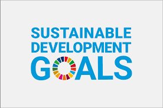
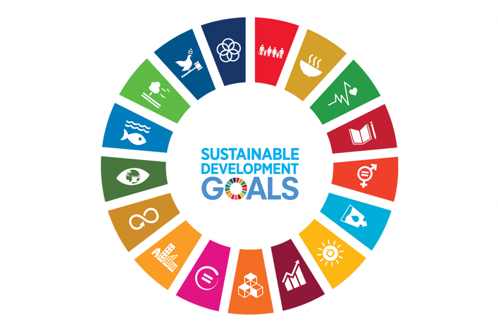

.png)
1. Tanpa Kemiskinan: Akhiri kemiskinan dalam segala bentuknya di mana pun.
2. Tanpa Kelaparan : Mengakhiri kelaparan, mencapai ketahanan pangan dan perbaikan gizi, serta mendorong pertanian berkelanjutan.
3. Kehidupan Sehat dan Sejahtera : Memastikan kehidupan yang sehat dan meningkatkan kesejahteraan bagi semua orang di segala usia.
4. Pendidikan Berkualitas : Memastikan pendidikan berkualitas yang inklusif dan adil serta mempromosikan kesempatan belajar seumur hidup bagi semua.
5. Kesetaraan Gender : Mencapai kesetaraan gender dan memberdayakan semua wanita dan anak perempuan.
6. Air Bersih dan Sanitasi Layak : Memastikan ketersediaan dan pengelolaan air dan sanitasi yang berkelanjutan untuk semua.
7. Energi Bersih dan Terjangkau : Memastikan akses terhadap energi yang terjangkau, andal, berkelanjutan, dan modern untuk semua.
8. Pekerjaan Layak dan Pertumbuhan Ekonomi : Mempromosikan pertumbuhan ekonomi yang berkelanjutan, inklusif dan berkelanjutan, kesempatan kerja yang penuh dan produktif, serta pekerjaan yang layak untuk semua.
SDGs, singkatan dari Sustainable Development Goals atau Tujuan Pembangunan Berkelanjutan, adalah agenda global yang disepakati oleh negara-negara anggota PBB untuk mengakhiri kemiskinan, melindungi planet, dan memastikan perdamaian dan kesejahteraan bagi semua orang pada tahun 2030. SDGs berisi 17 tujuan yang saling berkaitan untuk menciptakan dunia yang lebih adil, inklusif, dan berkelanjutan dengan menyeimbangkan pembangunan ekonomi, sosial, dan lingkungan.
SDGs penting karena mereka memberikan kerangka kerja global untuk mengatasi tantangan terbesar dunia, seperti kemiskinan dan perubahan iklim. Semua tujuan saling terkait, dan kesuksesan di satu bidang dapat mempengaruhi bidang lainnya. Penerapan SDGs memerlukan kolaborasi antara pemerintah, sektor swasta, dan masyarakat untuk mencapai masa depan yang lebih inklusif dan berkelanjutan.
Meskipun SDGs menjadi kerangka yang ambisius, implementasinya menghadapi berbagai tantangan, terutama di negara berkembang. Pendanaan yang terbatas, kurangnya infrastruktur yang memadai, serta ketidakstabilan politik sering kali menjadi penghambat dalam mencapai target SDGs. Selain itu, perubahan iklim yang terus berlangsung dan meningkatnya ketimpangan sosial memperberat pencapaian tujuan ini.
 9. Industri, Inovasi, dan Infrastruktur : Bangun infrastruktur yang tangguh, dorong industrialisasi yang inklusif dan berkelanjutan, serta dorong inovasi.
10. Berkurangnya Kesenjangan : Mengurangi ketimpangan dalam dan antar negara.
11. Kota dan Permukiman Berkelanjutan : Jadikan kota dan pemukiman manusia inklusif, aman, tangguh, dan berkelanjutan.
12. Konsumsi dan Produksi Yang Bertanggung Jawab : Memastikan pola konsumsi dan produksi yang berkelanjutan.
13. Penanganan Perubahan Iklim : Ambil tindakan segera untuk memerangi perubahan iklim dan dampaknya.
14. Ekosistem Lautan : Melestarikan dan memanfaatkan samudra, laut, dan sumber daya kelautan secara berkelanjutan untuk pembangunan berkelanjutan.
15. Ekosistem Daratan : Melindungi, memulihkan, dan mendorong pemanfaatan ekosistem darat yang berkelanjutan, mengelola hutan secara berkelanjutan, memerangi penggurunan, serta menghentikan dan membalikkan degradasi lahan dan menghentikan hilangnya keanekaragaman hayati.
16. Perdamaian, Keadilan, dan Kelembagaan yang Tangguh : Mempromosikan masyarakat yang damai dan inklusif untuk pembangunan berkelanjutan, menyediakan akses keadilan bagi semua dan membangun lembaga yang efektif, bertanggung jawab, dan inklusif di semua tingkatan.
17. Kemitraan Untuk Mencapai Tujuan : Memperkuat sarana implementasi dan merevitalisasi Kemitraan Global untuk Pembangunan Berkelanjutan.